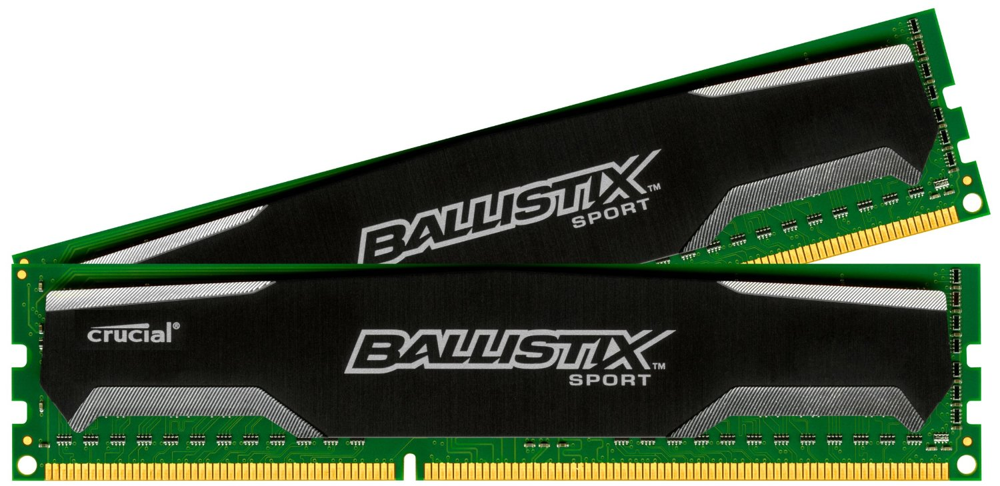
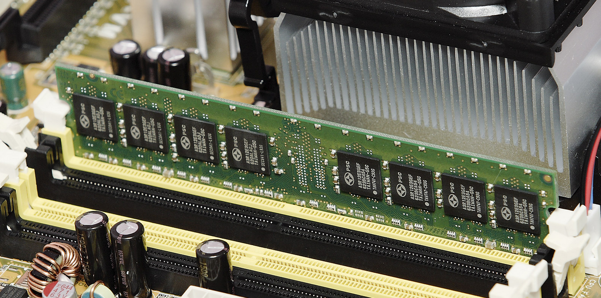
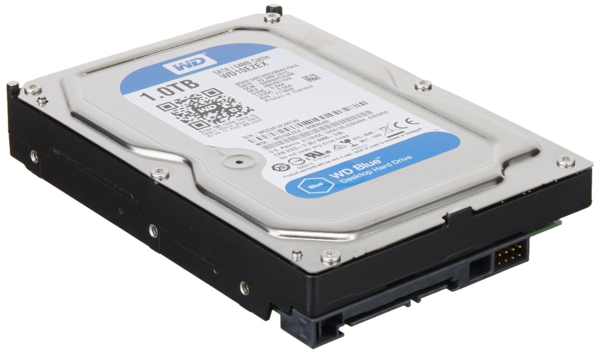
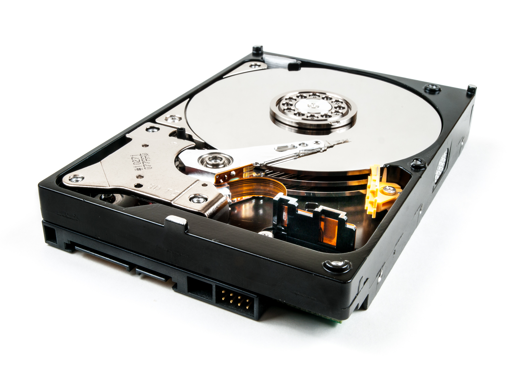
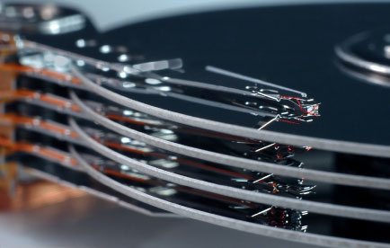
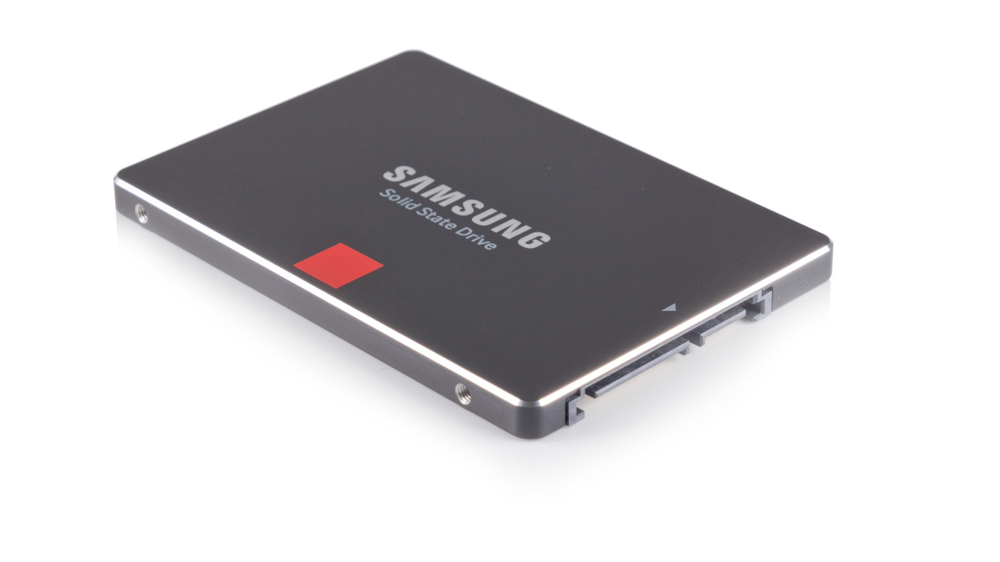
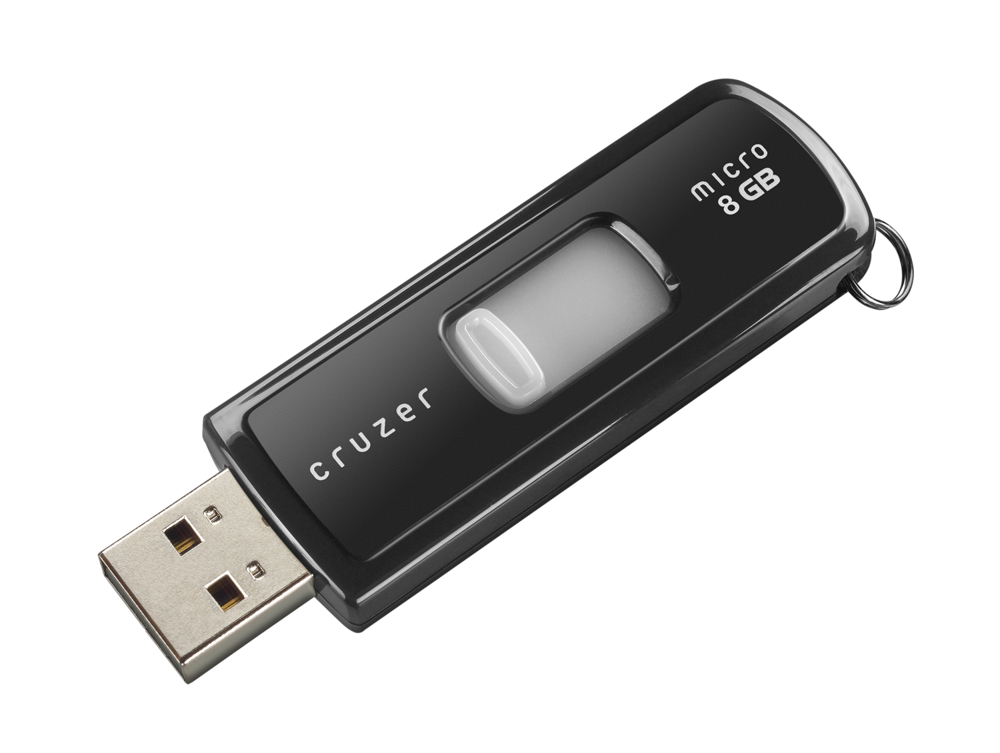
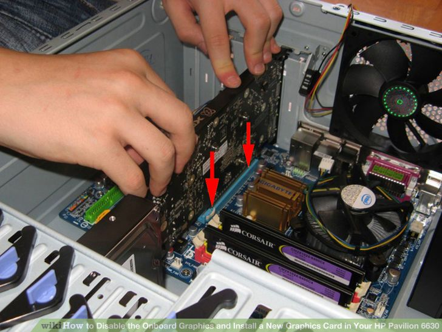
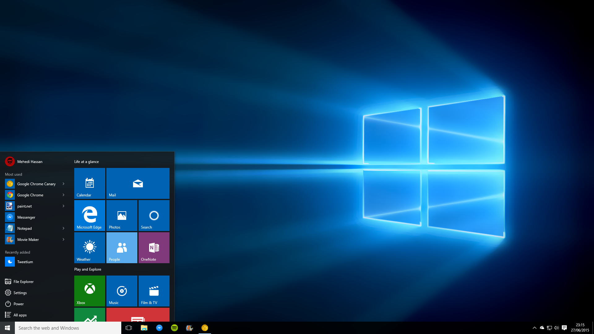

Hardware basics
Computer & smartphone tech
Smartphones: just pocket-sized computers
Smartphones: just pocket-sized computers
- Modern smartphone processor is over 1000x faster than the one
in the Apple ][
- Compared to first commercial GUI system, Apple Macintosh, CPUs
are over 200x faster.
The Central Processing Unit (CPU)
- The brain and beating heart of a computer
- (Clock) Speed measured in MHz. Sound familiar?
Memory vs. storage
- Naming convention to make meaning clear
- Memory is temporary, storage is (almost) forever.
- Even official spec sheets get it wrong. Be careful!


Memory (Volatile Memory)
- Different types, ranging from merely Usain Bolt fast to
The Flash fast: Random Access Memory (RAM), cache
- RAM is measured in Gigabytes
Storage (Non-volatile Memory)
- Mechanical and electronic
- Measured in Gigabytes or Terabytes
Mechanical hard drive

Mechanical hard drive

Mechanical hard drive

Solid State Drives (electronic)

USB Flash Drives (electronic)

Input/output
- Input: keyboard, mouse, game controller,
touch screen, microphone, camera
- Output: screen, projector, printer, speakers
Graphics card installation

Software
- Programs that your CPU decodes and runs
- Started with tape and punch cards, now we have programs that let
humans write programs
Operating systems
- A program that lets other programs easily handle input/output,
and talk to hardware and other programs.
Desktop operating systems

Full circle:
Laptops vs. smartphones
- Why don’t we just do everything on smartphones?